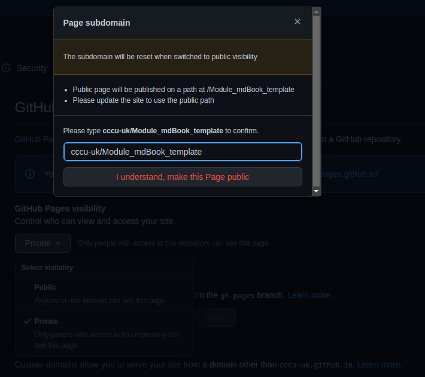

Introduction
This repo is to be used as the template for creating module mdBooks.
Use the contents page on the right to navigate through this mdBook.
Main thing to note is that your all you content should be placed inside the the childfolder content, and using subfolders to organise your work.
Github Setup
In order to get your mdBook to publish correctly you must follow this setup!
Step 1
This repo is to be used as the template, click this link to create a new repo at cccu-uk new repo for creating module mdBooks.
Selet from templates cccu-uk/Module_mdBook_template as seen below:

Next give your repo a name, best practice would be module code/name + exercies for example FCC_Exercices or PFL_Exercices. Don't forget to select internal option for only cccu member to access.

Step 2
Now you have a new repository navigate to the settings tab and select pages from the left hand menu as seen below and where the drop down box for source select gh-pages:

Once this has been done, select the Save button and set page to public for now and enter the name of your repo here, as seen below and click I understand...

Step 3
Now that you have set up the repo and github pages, feel free to edit the authors and title fields in the book.toml file, located in the parent directory for the repo.
[book]
authors = ["Contributor(s) name"]
title = "Templated mdBook"
language = "en"
multilingual = false
src = "content"
Step n...
SUMMARY.md
The summary file is used by mdBook to know what chapters to include, in what order they should appear, what their hierarchy is and where the source files are. Without this file, there is no book.
This markdown file must be named SUMMARY.md. Its formatting is very strict and must follow the structure outlined below to allow for easy parsing. Any element not specified below, be it formatting or textual, is likely to be ignored at best, or may cause an error when attempting to build the book.
Structure
-
Title - While optional, it's common practice to begin with a title, generally
# Summary. This is ignored by the parser however, and can be omitted.# Summary -
Prefix Chapter - Before the main numbered chapters, prefix chapters can be added that will not be numbered. This is usefu or forewords,introductions, etc. There are, however, some constraints. Prefix chapters cannot be nested; they should all be on the root level. And you cannot add prefix chapters once you have added numbered chapters.
[A Prefix Chapter](relative/path/to/markdown.md) - [First Chapter](relative/path/to/markdown2.md) -
Part Title - Headers can be used as a title for the following numbered chapters. This can be used to logically separate different sections of the book. The title is rendered as unclickable text. Titles are optional, and the numbered chapters can be broken into as many parts as desired.
# My Part Title - [First Chapter](relative/path/to/markdown.md) -
Numbered Chapter - Numbered chapters outline the main content of the book and can be nested, resulting in a nice hierarchy (chapters, sub-chapters, etc.).
# Title of Part - [First Chapter](relative/path/to/markdown.md) - [Second Chapter](relative/path/to/markdown2.md) - [Sub Chapter](relative/path/to/markdown3.md) # Title of Another Part - [Another Chapter](relative/path/to/markdown4.md)Numbered chapters can be denoted with either
-or*(do not mix delimiters). -
Suffix Chapter - Like prefix chapters, suffix chapters are unnumbered, but they come after numbered chapters.
- [Last Chapter](relative/path/to/markdown.md) [Title of Suffix Chapter](relative/path/to/markdown2.md) -
Draft chapters - Draft chapters are chapters without a file and thus content. The purpose of a draft chapter is to signal future chapters still to be written. Or when still laying out the structure of the book to avoid creating the files while you are still changing the structure of the book a lot. Draft chapters will be rendered in the HTML renderer as disabled links in the table of contents, as you can see for the next chapter in the table of contents on the left. Draft chapters are written like normal chapters but without writing the path to the file.
- [Draft Chapter]() -
Separators - Separators can be added before, in between, and after any other element. They result in an HTML rendered line in the built table of contents. A separator is a line containing exclusively dashes and at least three of them:
---.# My Part Title [A Prefix Chapter](relative/path/to/markdown.md) --- - [First Chapter](relative/path/to/markdown2.md)
Example
Below is the markdown source for the SUMMARY.md for this guide, with the resulting table of contents as rendered to the left.
# Summary
[Introduction](./Introduction.md)
# GitHub
- [Github Repo setup](./Github_Setup/Github_setup.md)
---
# Formatting
- [SUMMARY Guide](./Format/summary.md)
- [Markdown Guide](./Format/markdown.md)
- [Syntax-Highlighting](./Format/syntax-highlighting.md)
- [MathsJax](./Format/MathJax.md)
Markdown
mdBook's parser adheres to the CommonMark specification with some extensions described below.
You can take a quick tutorial, or try out CommonMark in real time. A complete Markdown overview is out of scope for this documentation, but below is a high level overview of some of the basics. For a more in-depth experience, check out the Markdown Guide.
Text and Paragraphs
Text is rendered relatively predictably:
Here is a line of text.
This is a new line.
Will look like you might expect:
Here is a line of text.
This is a new line.
Headings
Headings use the # marker and should be on a line by themselves. More # mean smaller headings:
### A heading
Some text.
#### A smaller heading
More text.
A heading
Some text.
A smaller heading
More text.
Lists
Lists can be unordered or ordered. Ordered lists will order automatically:
* milk
* eggs
* butter
1. carrots
1. celery
1. radishes
- milk
- eggs
- butter
- carrots
- celery
- radishes
Links
Linking to a URL or local file is easy:
Use [mdBook](https://github.com/rust-lang/mdBook).
Read about [mdBook](mdBook.md).
A bare url: <https://www.rust-lang.org>.
Use mdBook.
Read about mdBook.
A bare url: https://www.rust-lang.org.
Relative links that end with .md will be converted to the .html extension. It is recommended to use .md links when possible.
This is useful when viewing the Markdown file outside of mdBook, for example on GitHub or GitLab which render Markdown automatically.
Links to README.md will be converted to index.html.
This is done since some services like GitHub render README files automatically, but web servers typically expect the root file to be called index.html.
You can link to individual headings with # fragments.
For example, mdbook.md#text-and-paragraphs would link to the Text and Paragraphs section above.
The ID is created by transforming the heading such as converting to lowercase and replacing spaces with dashes.
You can click on any heading and look at the URL in your browser to see what the fragment looks like.
Images
Including images is simply a matter of including a link to them, much like in the Links section above. The following markdown includes the Rust logo SVG image found in the images directory at the same level as this file:

Produces the following HTML when built with mdBook:
<p><img src="images/rust-logo-blk.svg" alt="The Rust Logo" /></p>
Which, of course displays the image like so:

Extensions
mdBook has several extensions beyond the standard CommonMark specification.
Strikethrough
Text may be rendered with a horizontal line through the center by wrapping the text with two tilde characters on each side:
An example of ~~strikethrough text~~.
This example will render as:
An example of
strikethrough text.
This follows the GitHub Strikethrough extension.
Footnotes
A footnote generates a small numbered link in the text which when clicked takes the reader to the footnote text at the bottom of the item. The footnote label is written similarly to a link reference with a caret at the front. The footnote text is written like a link reference definition, with the text following the label. Example:
This is an example of a footnote[^note].
[^note]: This text is the contents of the footnote, which will be rendered towards the bottom.
This example will render as:
This is an example of a footnote1.
1This text is the contents of the footnote, which will be rendered towards the bottom.
The footnotes are automatically numbered based on the order the footnotes are written.
Tables
Tables can be written using pipes and dashes to draw the rows and columns of the table. These will be translated to HTML table matching the shape. Example:
| Header1 | Header2 |
|---------|---------|
| abc | def |
This example will render similarly to this:
| Header1 | Header2 |
|---|---|
| abc | def |
See the specification for the GitHub Tables extension for more details on the exact syntax supported.
Task lists
Task lists can be used as a checklist of items that have been completed.
Example:
- [x] Complete task
- [ ] Incomplete task
This will render as:
- Complete task
- Incomplete task
See the specification for the task list extension for more details.
Smart punctuation
Some ASCII punctuation sequences will be automatically turned into fancy Unicode characters:
| ASCII sequence | Unicode |
|---|---|
-- | – |
--- | — |
... | … |
" | “ or ”, depending on context |
' | ‘ or ’, depending on context |
So, no need to manually enter those Unicode characters!
Collaspable Fields
You may have need to create collaspable fields for readability or to pose questions to students, and have them reveal the answer.
The syntax and formatting must be adhered to or you will experience unattended behaviour.
What is the correct software development process?
- I can't fix this.
- Crisis of confidence.
- Questions career.
- Questions life.
- Oh it was a typo. Cool.
Click for solution
- Oh it was a typo. Cool.
Always check your grammactial errors.
---
<details>
<summary><b>Click for solution</b></summary>
<p></p>
4. Oh it was a typo. Cool.
Always check your grammactial errors.
</details>
---
Syntax Highlighting
mdBook uses Highlight.js with a custom theme for syntax highlighting.
Automatic language detection has been turned off, so you will probably want tospecify the programming language you use like this:
```rust
fn main() {
// Some code
}
```
Output:
fn main() { // Some code }
or ...
```bash
main(){
}
```
Output:
main(){
}
Supported languages
These languages are supported by default:
- apache
- armasm
- bash
- c
- coffeescript
- cpp
- csharp
- css
- d
- diff
- go
- handlebars
- haskell
- http
- ini
- java
- javascript
- json
- julia
- kotlin
- less
- lua
- makefile
- markdown
- nginx
- objectivec
- perl
- php
- plaintext
- properties
- python
- r
- ruby
- rust
- scala
- scss
- shell
- sql
- swift
- typescript
- x86asm
- xml
- yaml
MathJax Support
mdBook has optional support for math equations through MathJax.
To enable MathJax, you need to add the mathjax-support key to your book.toml under the output.html section.
[output.html]
mathjax-support = true
Note: The usual delimiters MathJax uses are not yet supported. You can't currently use
$$ ... $$as delimiters and the\[ ... \]delimiters need an extra backslash to work. Hopefully this limitation will be lifted soon.
Note: When you use double backslashes in MathJax blocks (for example in commands such as
\begin{cases} \frac 1 2 \\ \frac 3 4 \end{cases}) you need to add two extra backslashes (e.g.,\begin{cases} \frac 1 2 \\\\ \frac 3 4 \end{cases}).
Inline equations
Inline equations are delimited by \\( and \\). So for example, to render the following inline equation \( \int x dx = \frac{x^2}{2} + C \) you would write the following:
\\( \int x dx = \frac{x^2}{2} + C \\)
Block equations
Block equations are delimited by \\[ and \\]. To render the following equation
\[ \mu = \frac{1}{N} \sum_{i=0} x_i \]
you would write:
\\[ \mu = \frac{1}{N} \sum_{i=0} x_i \\]